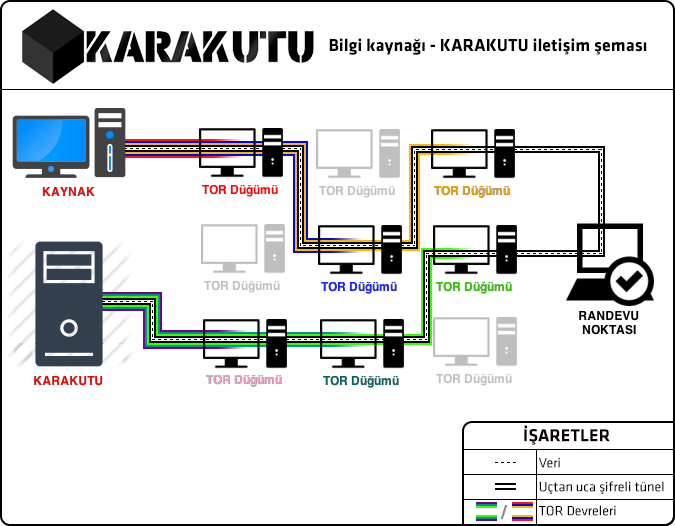

"Birisine bir maske verin ve size doğruyu söylesin."
Oscar Wilde
KARAKUTU, görevin veya konumun sayesinde erişebildiğin ancak halktan gizli olan bir bilgiyi halka iletebilmek ve bu sırada kimliğini gizli tutmak için kullanabileceğin güvenli bir ihbar kutusudur. KARAKUTU TOR ağı üzerinde bir gizlenmiş hizmet (hidden service) olarak çalışmaktadır. Gizlenmiş hizmet olarak çalışan sistemlerde ne sunucunun ne de kullanıcının IP adresi öğrenilemez. KARAKUTU bu şekilde sana anonimlik sağlar. Yine TOR ağının ve gizlenmiş hizmetlerin çalışma prensibi dolayısıyla KARAKUTU şifreli iletişim kullanır. Yani BTK,TİB gibi devlet kurumları, TTNET, KabloNet, Superonline gibi internet servis sağlayıcıları ve MİT, CIA, NSA gibi istihbarat servisleri senin iletişimini dinliyor olsalar bile görecekleri tek şey şifrelenmiş ve hiç bir anlamı olmayan garip karakterler olacaktır. KARAKUTU bu şekilde sana güvenlik sağlamış oluyor.

Bilgi kaynağı (yani sen) ile KARAKUTU arasındaki veri iletişimini yukarıdaki şemaya göre açıklayacak olursak:
Bu yöntem sayesinde ne biz senin gerçekte hangi bilgisayardan bağlandığınızı görebiliriz ne de sen KARAKUTU'nun sunucularının nerede olduğunu görebilirsin. Aynı zamanda tüm veri uçdan uca şifreli olduğu için TOR yazılımlarının kullandığı randevu noktası da hiç bir veriyi okuyamaz.
Aşağıdaki durumlarda KARAKUTU seni koruyamaz: